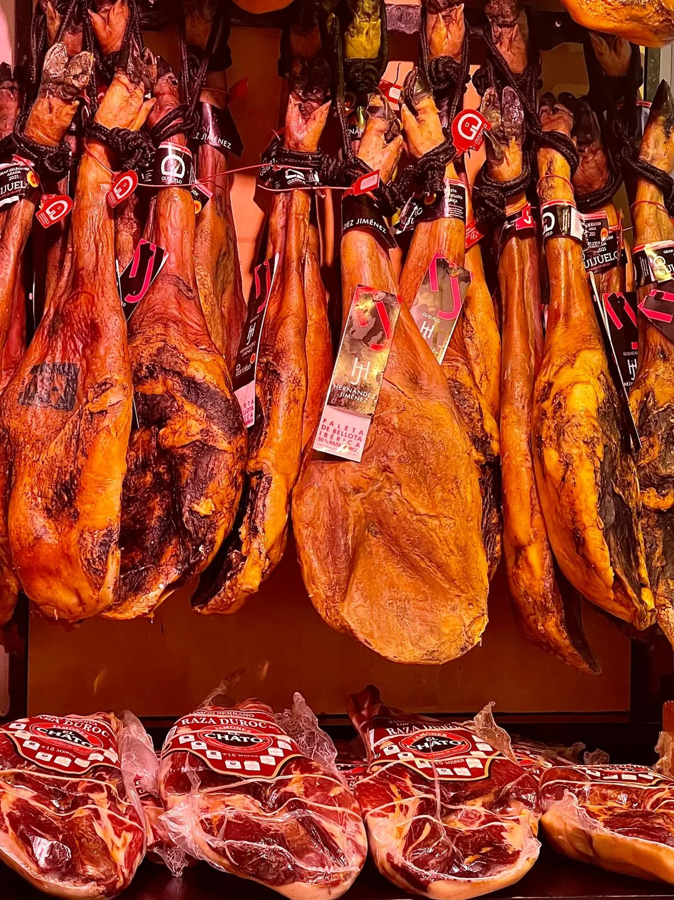
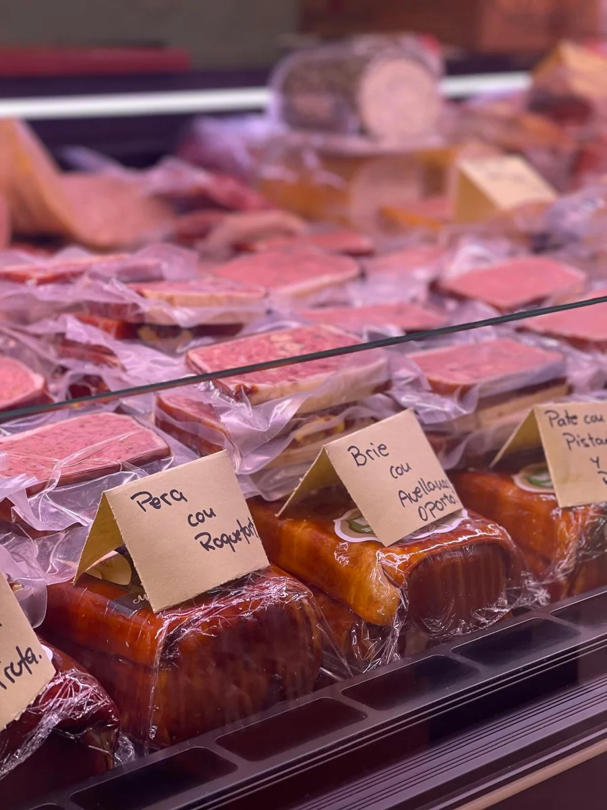

Av. del Marquès de Sant Mori, 112
Deja la lista hecha. Pasa a buscarla.
Elige en el mostrador desde el móvil, dinos qué día te va bien y la tienda te llama para confirmarlo.

El mostrador
Pide como pedirías en tienda: qué, cómo y para cuántos. Casi todo depende del peso y del día, así que el precio te lo confirma la tienda. Los jamones enteros ya llevan su precio. Ver fotos por sección
¿No está lo que buscas?
Por partes
Elige vaca o cerdo y toca una parte para conocer sus cortes. Los encargos de carne estarán disponibles cuando se habilite el transporte frigorífico.
Nombres habituales del despiece de ternera y de cerdo, para orientarte. Qué piezas hay ese día, de qué origen y a qué precio te lo confirma la tienda.
Esto es lo que hay detrás del cristal
Lo disponible cambia: confírmalo siempre con José Tomás.
Foto orientativa de carnes: Audriecarter01, Wikimedia Commons · CC0.

¿Sin ganas de pensar?
Empieza por una idea. Se añade a tu lista y ahí lo cambias todo.
Tarjeta de la casa · Propuesta
Cada compra, un sello.
Te apuntas con tu correo y llevas la tarjeta en el móvil. En la tienda te sellan cada compra y, al completar la tarjeta, te llevas un regalo de la casa.
- Te apuntas aquí, en un minuto.
- Enseñas tu código al pagar y te ponen un sello.
- Completas la tarjeta y recoges tu regalo.
Una solicitud, no una compra.
- 1Haces la lista
Qué quieres, cómo y para cuántos.
- 2Eliges cómo y cuándo
Recoger en tienda o, como propuesta, a domicilio. Día y franja.
- 3La tienda te confirma
Disponibilidad, precio y hora. Hasta entonces no hay encargo aceptado.
- 4Lo recibes
En Av. del Marquès de Sant Mori, 112, o en casa si la tienda acepta el reparto. Aquí no se paga nada.
Sant Mori, 112

Av. del Marquès de Sant Mori, 112
Badalona
Cómo llegar (abre Google Maps)
@josetomasxarcuteria (abre Instagram)
Horario: pendiente de confirmar con la tienda.